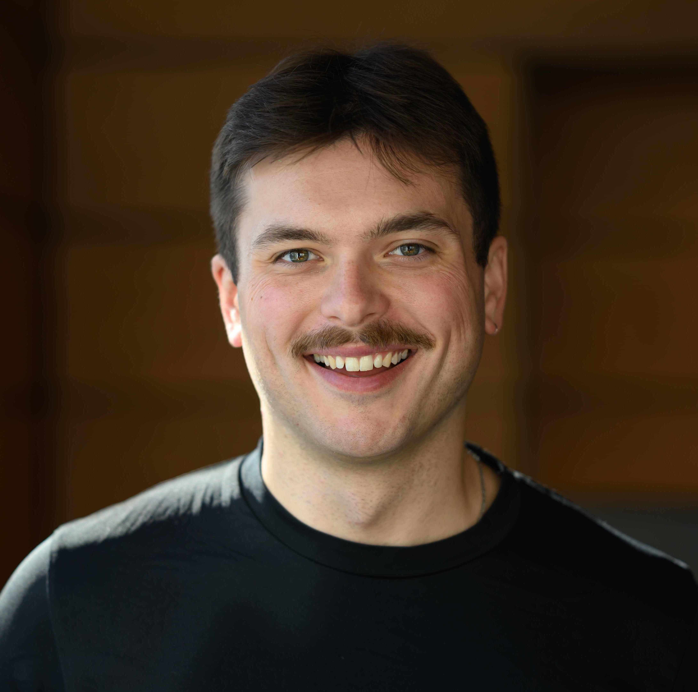

PhD student in Geophysics at MIT and WHOI, advised by Daniel Rothman, Alan Seltzer, and David Nicholson.
Email | Github | Orcid | Google Scholar
Hey, I'm Perrin. I'm a graduate student at the Massachusetts Institute of Technology (MIT) and the Woods Hole Oceanographic Institution (WHOI). I develop theoretical and numerical dynamical models of the marine carbon cycle with Dr. Daniel Rothman at MIT. I also design inversion/data assimilation schemes of noble gas tracers to constrain the global ocean heat budget with Dr. Alan Seltzer and Dr. David Nicholson at WHOI. Previously, I was an undergraduate at the University of Chicago (UChicago) where I earned a B.S. in Applied Mathematics and a B.A. in Physics in June 2022.
Previous to now, I worked under Professor David Archer in the Department of Geophysical Sciences at UChicago and under Dr. Ken O. Buesseler and Dr. Roo Nicholson at WHOI. In both labs, I worked to develop data-constrained oceanographic models. Through these experiences, I have become interested in utilizing the strengths from both observational and theoretical practices by combining machine learning with inverse and computational modeling to elucidate the stability and critical tipping points of the biological pump and the carbon cycle.
In my work, I commonly come back to the statistics aphorism attributed to George E. P. Box:
"All models are wrong, but some are useful."It is therefore my job as an aspiring ocean modeler to make all my models useful. I mean, who wants a worthless model? I certainly don't...